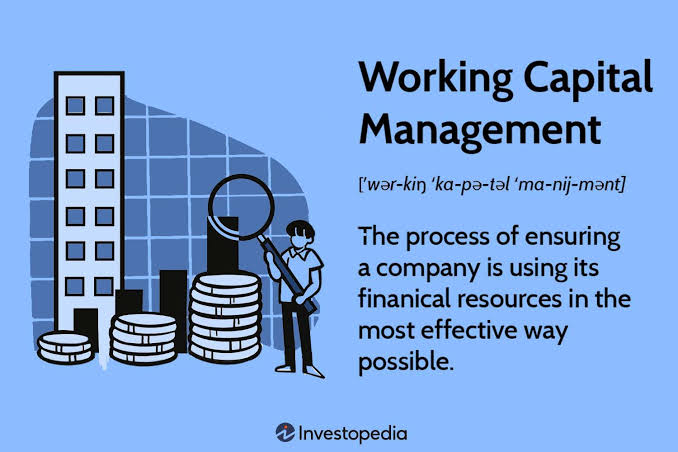

Working Capital Management
Learn the business process of monitoring and controlling short-term assets and liabilities to ensure a company can fund its daily operations and pay its immediate debts

Working capital management is the process of planning and controlling a company's short-term assets and short-term liabilities to ensure it maintains sufficient liquidity for day-to-day operations while maximizing operational efficiency.
Unlike long-term capital structure or capital budgeting decisions, working capital management focuses on short-term liquidity, working capital cycles, and cash conversion efficiency (typically within a 12-month operating window).
The Core Objective: Balancing Liquidity and Profitability
Every working capital strategy aims to address a central trade-off: How much liquidity does the
business need to avoid insolvency without sacrificing returns?
Holding excess short-term current assets (like hoardings of cash or oversized inventories) reduces
the risk of missing bill payments or running out of stock, but lowers overall profitability because
tied-up cash earns little to no return. Conversely, operating with too little working capital
increases operational risk and can lead to short-term liquidity crises.
Net Working Capital (NWC) and the Core Components
Net Working Capital (NWC) measures a company's short-term financial operational health:
* Cash & Cash Equivalents: Highly liquid funds reserved for immediate operational expenses and unexpected liquidity shocks.
* Accounts Receivable (A/R): Credit extended to customers for goods or services delivered but not yet paid for.
* Inventory: Raw materials, work-in-progress, and finished goods held for sale.
Current Liabilities (Operating Obligations):
* Accounts Payable (A/P): Short-term credit granted by suppliers for goods or services received but not yet paid for.
* Short-Term Debt & Accrued Expenses: Imminent obligations due within one year, including wages, interest, and taxes.
The Cash Conversion Cycle (CCC)
The Cash Conversion Cycle measures the time (in days) it takes for a company to convert its investments in inventory and operational resources into actual cash inflows from sales.
* DIO = (Average Inventory / Cost of Goods Sold) * 365
Days Sales Outstanding (DSO): Average number of days required to collect cash payments from customers after a sale.
* DSO = (Average Accounts Receivable / Total Credit Sales) * 365
Days Payable Outstanding (DPO): Average number of days a company takes to pay its trade creditors and suppliers.
* DPO = (Average Accounts Payable / Cost of Goods Sold) * 365
Goal: Lowering the Cash Conversion Cycle (by reducing DIO and DSO while extending DPO reasonably) frees up operational cash flow without borrowing.
Working Capital Management Strategies
Aggressive Strategy: Keeps low levels of current assets relative to sales, relying
heavily on
short-term liabilities. Maximizes profitability and Return on Capital Employed (ROCE) but increases
default and inventory stockout risks.
Conservative Strategy: Maintains high buffer levels of cash and inventory alongside
long-term
financing. Minimizes operational disruption and liquidity risk, but lowers profitability due to
holding idle cash assets.
Moderate / Matching Strategy: Matches the maturity profile of assets with
liabilities; short-term
seasonal working capital needs are funded with short-term liabilities, while permanent working
capital is funded with long-term capital.
Working Capital Management Metrics
Current Ratio = Current Assets / Current Liabilities
* Evaluates whether a company has enough short-term resources to cover short-term debts (target
ratio typically ranges between 1.2 and 2.0).
Quick Ratio (Acid-Test Ratio) = (Cash + Marketable Securities + Accounts Receivable) /
Current
* Assesses immediate short-term liquidity by excluding less liquid inventory from current
assets.
Working Capital Turnover = Revenue / Average Net Working Capital
* Indicates how efficiently a business uses its net working capital to support sales growth.
What's Next?
You have successfully built the analytical foundation of corporate finance. In Module 3: DCF Valuation, we will dive deep into the practical application of these concepts. You will learn how to build a full, step-by-step financial model from scratch to value a real company.
Corporate Finance Type Racer
Complete the Type Racer challenge to finish Module 2 and unlock Module 3!
🏎️ Play Type Racer Minigame